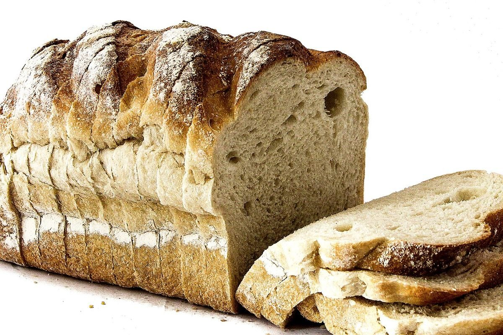

Q.07

A bean is つぶの、あつまり.
制作側の答え(例)
店のこと
確認できているのは、所在地とInstagramのアカウントだけです。
「制作側の答え」は制作側が想像した言葉遊びです。お店の実際の様子・考え・提供内容とは関係がありません。
お店の由来、こだわり、席の数、提供するもの。これらはお店から教えていただいたあとに、本当の言葉で埋めます。
制作側の問題集 つづき
A bean is つぶの、あつまり.
制作側の答え(例)

Crust is 音のするところ.
制作側の答え(例)

A slice is ひと切れぶんの余白.
制作側の答え(例)